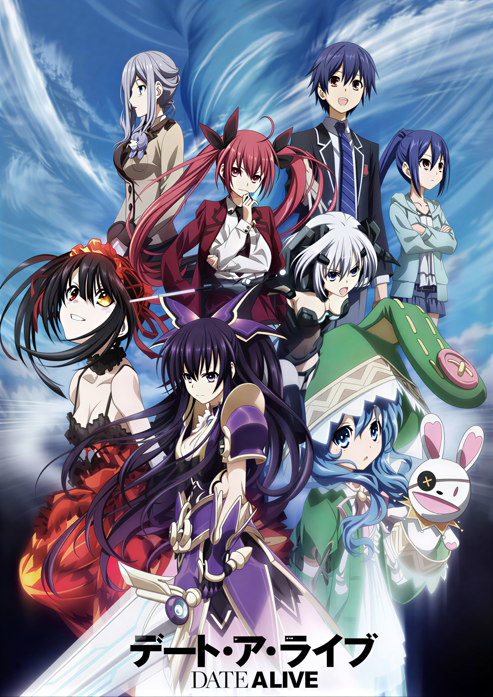

DESIGN
Add the outfit, silhouette, or detail you return to most.

FILE 01 / SUBJECT
The presence that made Date A Live feel like a private midnight stage.
PRIVATE ENTRY / 02
This is where the personal reason belongs. Write about the first scene, the design, the voice, or the strange feeling that made Kurumi stay with you.
Replace this text with your own words when the shrine becomes yours.
FILE 03 / VISUAL RECORDS
Artwork, screenshots, edits, and fragments collected under one clock.
FILE 04 / PERSONAL INDEX
Add the outfit, silhouette, or detail you return to most.
Keep a place for the moment that made the character unforgettable.
Link a track that belongs to this archive.
FILE 05 / VOICE RECORD
Add quote text supplied by the site owner here.
EPISODE / SOURCE / PERSONAL NOTEFILE 06 / TRANSMISSIONS
Add YouTube, Spotify, AMV, and official media links without downloading or bundling copyrighted files.
END OF CURRENT FILE
More personal records can be added here as the shrine grows.
← RETURN TO KURUMII COLLECTIVE